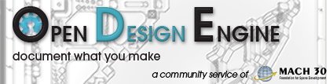

Welcome to the Open Design Engine (ODE) project Wiki. This wiki contains documentation covering development, installation, and use (on your own server or at http://opendesignengine.net) of the Open Design Engine software. If you are interested in starting a hosted project, click here. ODE started as a proposed joint project between Mach 30 and CSTART. We hope it will grow to serve a wider audience and be used to host Open Source Hardware (and Software) projects of all kinds.
We like to think of Open Design Engine as the Source Forge for hardware. And while sites like Source Forge and LaunchPad are focusing on features to support software projects (such as demo web and database servers for web site projects), Open Design Engine is focused on the needs of hardware projects. Open Design Engine is built on Redmine (licensed under the GNU General Public License v2), and has support for common features such as source code repositories, wikis, forums, and issue tracking. ODE also has full sub-projects so teams can breakout their work along functional lines (such as software, electronics, and mechanical engineering) all under the heading of the main project. And Open Design Engine has a desktop like file management system for storing non-source files in a way that is more familiar to developers who come from disciplines beyond software development.
ODE is being distributed similar to Wordpress. That is, there will be a version available for download that users can install on their own servers (like http://wordpress.org) and a hosted version where users can register accounts and host projects (like http://wordpress.com).
Guiding Values¶
The following values are intended to shape the development of ODE. Ideally decisions will represent a balancing of multiple values. Note, these values were derived by reflecting on the views (or positions) presented during the early discussions about ODE at Mach 30 and CSTART. See the Mach 30 consensus process for more info on values and positions. Note, these values are listed in no particular order, the numbering is simply for easy reference.
- We need something that works better than what we have now - CSTART has the wiki+forums+polls+version control system?, Mach 30 has its forums+phone bridge
- Getting something sooner would be better than later - there is a sense that current projects will gain momentum from having the right tool for engineering management, which would be a "very good thing"
- It would be better if we can share the work and the rewards of developing this system - this includes both between CSTART and Mach 30 and with the larger open design/hardware community
- Release early, release often - this has been the mantra of other successful open source projects, and is in support of having something "sooner rather than later"
- The defining feature(s) include the ability to manage engineering decisions - we need to focus on those features that hardware projects need that platforms for open source software development do not provide
- The language used for the software must be one that is familiar to developers in our communities - you can't write in a language you don't know
- The choice of programming language (and other elements of the software stack) impacts the ability of users to self-host, and all other things being equal, the barrier to self-hosting should be as low as possible - this value strongly supports choosing tools that are widely available if at all possible (such as the LAMP stack)
- Proposed but not discussed - Site security and information assurance should be a high priority - organizations in the US will need their hosted versions of the tool to be secure enough to meet ITAR and other export control restrictions
See the links on the right hand side for more details on project development, installation, and use.
{kind=link}